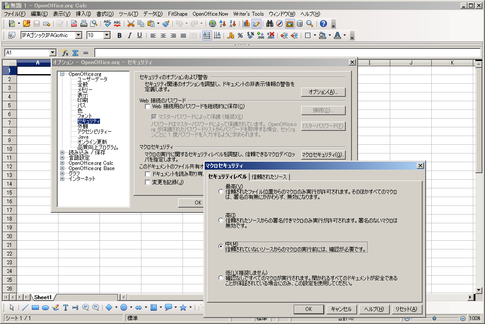

1)OpenOffice.orgの何れかのApplicaion(今回は「Calc」とします)を起動する。
2)「ツール」⇒「オプション」⇒左側画面の「OpenOffice.org」⇒「セキュリティ」⇒右側画面の「マクロセキュリティ」
⇒マクロセキュリティレベルが「中」以下でないとマクロが実行されません。
3)セキュリティレベルを「中」を選択
4)「OK」
1)OpenOffice.orgの何れかのApplicaion(今回は「Calc」とします)を起動する。
2)Menu Barの「ツール」⇒「マクロ」⇒「マクロの管理」⇒「OpenOffice.orb Basic」を選択。
3)「マクロの記録先」を今回開いたCalc file名を選択する。(「マイマクロ」の選択はMacroを少し理解してから使えば良いと思います。)
4)「新規作成」⇒「新しいモジュール」Windowが表示されるのでmodeule名(今回は「OOoMacro」)を入力して、「OK」をクリック。
5)IDEが起動するので、「Sub Main」と「End SUb」の間にMacoro Code(下記1-1)の場合は「MsgBox("Hello World")」)を記述。
6)Menu Barの「ツール」⇒「マクロ」⇒「マクロの実行」を選択。
以上でMacroが実行されます。
マクロには変数の宣言等色々と文法がありますが、取敢えずマクロを体験しましょう
Sub Main1
MsgBox("Hello World")
End Sub
これだけで立派なMacroが出来ており、あなたは「Macro使い」の山頂に向かって歩き始めました。
MsgBoxにはOptionを付けれます。Optionを付けた形式は以下の様になります。
MsgBox("メッセージ文"，Option No,"Title名")
Option NoとTitle名は省略可
[ Sample Code ]
Sub Main2
a=MsgBox("あなたは男性ですか?",4,"性別確認")
End Sub
Macroを組む時に途中で変数の値を確認する事は非常に重要な事です。
そのような時はPrintを使いましょう。Printならば
・「はい」と「キャンセル」のボタンがあって途中キャンセルが出来る事
・複数の変数を表示する場合に変数間にスペースが自動で付いて、値が分り易いというメリットがあります。
[ Sample Code ]
Sub Main3
a="値は"
b=10
Print a,b
End Sub
MsgBoxやPrintがデータの出力Boxとすれば、データの入力Boxも有る筈です。それが「InputBox」です。
[ Sample Code ]
Sub Main4
a=InputBox("値を入力して下しさい。")
MsgBox("入力値は" & a & "ですね”) '←変数の羅列はPrintでは｢,」、MsgBoxでは｢&｣
End Sub
Macroはif文に始まりif文で終わる位に多用します。
[ Sample Code ]
Sub Main5
a=MsgBox("あなたは男性ですか?",4,"性別確認")
if a=6 then
MsgBox("あなたは男性です。")
else
MsgBox("あなたは女性です。")
end if
End Sub
条件分岐が多い時に使います。但し日本語を判定に使用するとBugが生じる可能性があります。
[ Sample Code ]
Sub Main6
a=InputBox("あなたの出身地は「北海道」「青森」「東京」「愛知」「大阪」「広島」「高知」「福岡」どこですか？")
select case a
case "北海道"
MsgBox("あなたの出身は北海道地区ですね")
case "青森"
MsgBox("あなたの出身は東北地区ですね")
case "東京"
MsgBox("あなたの出身は関東地区ですね")
case "愛知"
MsgBox("あなたの出身は中部地区ですね")
case "大阪"
MsgBox("あなたの出身は近畿地区ですね")
case "広島"
MsgBox("あなたの出身は中国地区ですね")
case "高知"
MsgBox("あなたの出身は四国地区ですね")
case "福岡"
MsgBox("あなたの出身は九州地区ですね")
End Select
End Sub
IF文と同じ位多用されるものです。下記は1から10の数字をMessgeBoxに表示させるものです。
[ Sample Code ]
Sub main7
for i=1 to 10
msgbox i
next
End Sub
条件に一致するまで命令文を繰り返す。但し、条件式が悪いと無限Loopになってしまい、PCのハングアップになるので注意。
また今回の例文のデータには配列を使います。
[ Sample Code ]
Sub main8
Dim oName(11) '←配列データName(0)～Name(11)を宣言しています。
flag=0
i=1
Do While flag=0 and i < 12 '←flag=1又はi=11になるまで命令文を繰り返す。
oName(i)=i+1
oMonth=msgbox("今は" & oName(i) & "月です",4)
if oMonth=6 then
flag=1
end if
i=i+1
Loop
End sub
Macro Code中にCommentを残したい場合は以下の2つの方法があります。
･「'」をつける。
･「Rem」をつける。
両者共に、行の先頭に付ける必要は有りません。Program Codeの後に「'」or「Rem」を付ければ以降の文字は全てComment文として
認識されます。但し、Comment文が複数行になる時は各行に「'」or「Rem」が必要です。
OpenOffice.oeg Basic(以後：OOoBasic)ではFile位置の管理をURL(Uniform Resource Locator)にて行います。
MS-OfficeのVBAがPC内のみの作業を前提であるのに対して、OOoBasicではNetwork上での作業を前提としています。
これはNetworkを用いて作業するのは、OOoBasic ＞＞ VBA である事を意味しています。
以下にURL作成Codeをしるします。
[ Sample Code ]
Sub oURL
Dim oFileName
Dim oFileURL
oFileName = "c:\temp\test.html"
oFileURL = ConvertToUrl(oFileName)
MsgBox("File Name = " & oFileName & Chr$(10) & _
" から" & Chr$(10) & _
"URL = " & oFileURL & Chr$(10) & _
" に変換しました。" , 0,"[ URLの作成 ]")
End sub
[ Sample Code ]
Sub oURL
Dim oFileName
Dim oFileURL
oFileURL = "file:///c:/temp/test.html"
oFileName = ConvertFromUrl(oFileURL)
MsgBox("URL = " & oFileURL & Chr$(10) & _
" から" & Chr$(10) & _
"File Name = " & oFileName & Chr$(10) & _
" に変換しました。" , 0,"[ URLからの変換 ]")
End sub
以上でOpenOffice.org Basicを用いたMacroの基本は終了です。「Macro使い」への道程として、
・ただ単純に読んだだけの方は3合目
・Copy、Pasteして実行した方は5合目
・Codeを自分でType入力して実行された方は6合目
まで到達していると思います。
本PageにてOpenOffice.org Basicに興味を持たれた方は、「はにゃ?」さんの個人サイトを訪れて下さい。大体の事は分かると思います。